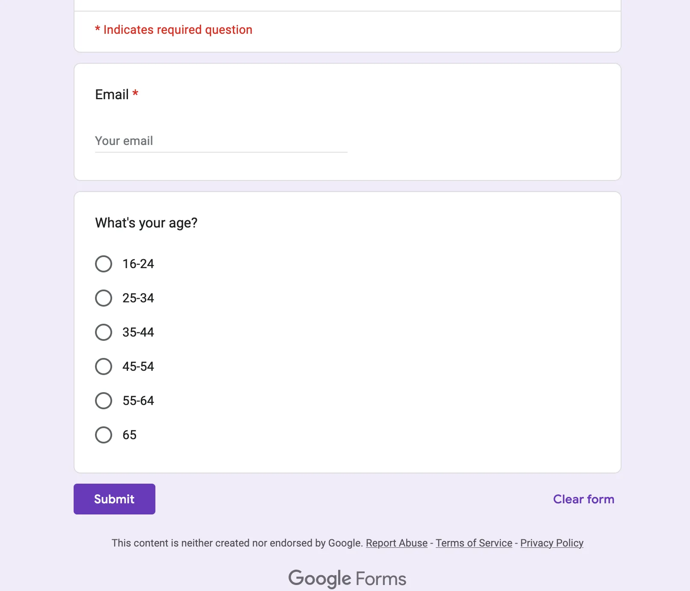
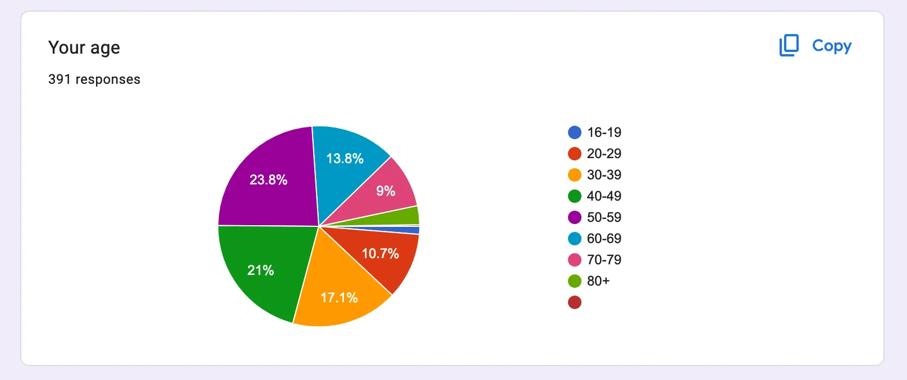
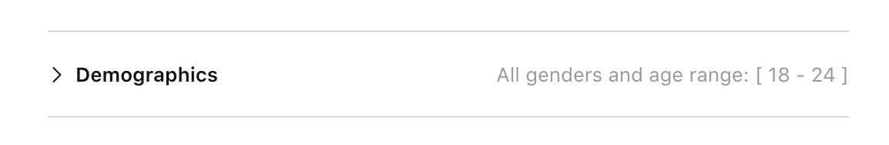
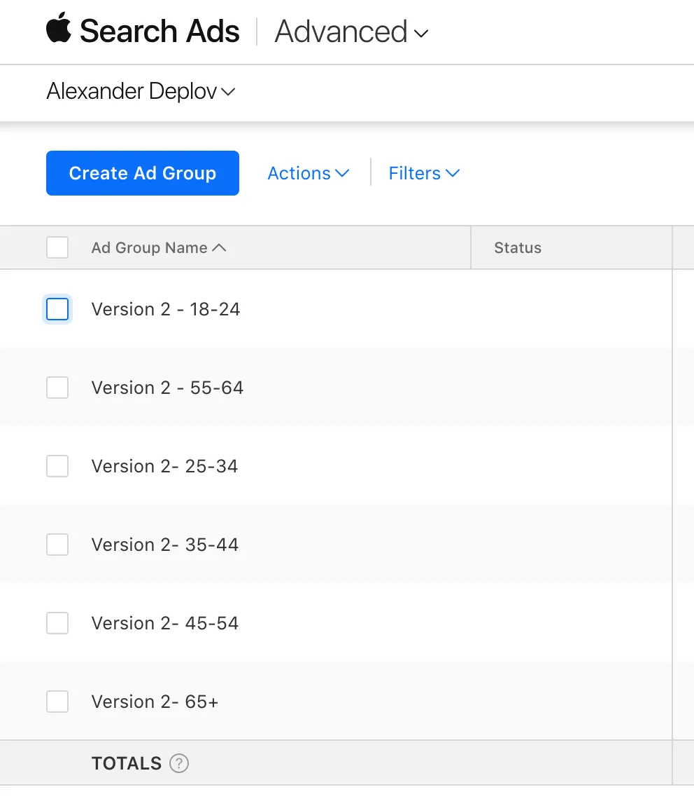

Two Data-Driven Methods to Identify Your Target Audience Age
Knowing your target audience is critical to creating a product that truly resonates with your users. By understanding their age (as an example), you can tailor the user experience, features, and even your marketing messages to their specific needs and preferences. This personalization not only increases engagement, but also contributes to the overall success of your product.
As a product designer, if you can’t define your users, it’s like trying to shoot a target blindfolded. You need to know their ages, preferences, and behaviors in order to design a product that fits them like a glove.
In this article, we’ll explore two data-driven methods that can help you uncover the age of your target audience and make informed design decisions that lead to a more successful product:
- By using Google Forms
- By using Apple Search ADS
How to find target audience age by Google Forms
- Create a Google Form and set up a document with question you want to know, such as age.
- Set up a range 16-24, 25-34, 35-44, 45-54, 55-64, 65+

- Click on Preview to see the result
- Copy the URL of this page
- In iOS create UIAlertView with “Would you like to participate in UX or marketing research?
- Add the URL to the SFSafariViewController attached to the “Participate” button
Now sit and wait. After some time, when you collect the data, you will be able to read the result.

How to find target audience age by Apple Search ADS Advanced
This one is more interesting for me because you can see the demand and you can be more specific about users location, and other info. It’s not necessary should be Apple Search ADS, it can be any other service. But the core idea is to split it by age in the root of your ad, so you can see what age responds the most to your ADS.
- Create a new AD group for the same range 16-24, 25-34, 35-44, 45-54, 55-64, 65+.

At some point, when you have enough data, you can do the next two things:
- Compare the ADS age range with the Google Form to see the coloring
- Turn off ADS range that has big amount of clicks but less amount of sales. It means that these are target audience. That’s how you can optimize your ads to keep only the ones that perform better.

I used both techniques when building Anchor Pointer GPS Compass for iOS. Initially, I imagined that our target audience was a teenager, it turned out to be 50 - 69+.
By using this method you can create gather most of the important data about your users, not only an age.